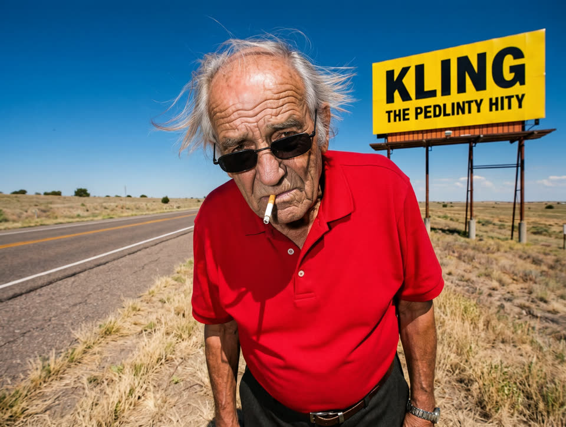

Kling Image 4.0 official "roadside documentary" portrait: red polo, cigarette, wide-angle close-up under harsh noon sun and direct flash

Official "Narrative Storytelling" example from the Kling Image 4.0 User Guide: a thin elderly man leaning into a slightly wide lens beside a highway, a giant yellow billboard behind him reading "KLING", a red polo against the yellow, narrow black sunglasses and a cigarette. The prompt names the aesthetic as a blend ("Latin American roadside documentary photography, working-class portraiture, and vintage advertising imagery") and finishes with the technical look: harsh outdoor sun with direct flash and highly saturated colour. Shows Kling 4.0's on-image text rendering as part of the style.
Prompt
A documentary portrait with a strong roadside aesthetic and a rugged, weathered character. The subject is a thin, elderly man standing beside a patch of wild grass along a highway, leaning slightly forward with his head lowered toward the camera. Behind him are a glaring blue sky, a straight road stretching into the distance, and a massive yellow billboard. The billboard displays the word “KLING.” Its vivid yellow background contrasts sharply with the bright red polo shirt the man is wearing, making the entire image feel exceptionally dry, scorching, and direct. The man wears narrow black sunglasses and has a cigarette hanging from his mouth. His sparse, disheveled hair is blown to one side by the wind. Deep wrinkles mark his face, and his expression blends disdain, exhaustion, and stubborn resilience, conveying the hardened vitality of someone who has spent years exposed to the wind and sun along the roadside. The camera is positioned very close to the subject, with a slight wide-angle perspective. The man occupies the center of the foreground, while the highway and billboard behind him provide a minimal, straightforward narrative setting. The lighting is harsh midday sunlight with no softening. Every detail is sharply defined, from the texture of his skin and the wrinkles in his clothing to the dry, yellowed grass. The overall aesthetic combines Latin American roadside documentary photography, working-class portraiture, and vintage advertising imagery. The result is rugged, humorous, and unapologetically direct. Harsh outdoor sunlight with direct-flash photography; highly saturated, vivid colors throughout.
Our Seedance 2.5 adaptation
[ADAPTED for Seedance 2.5 by Grok Bot; not the creator's prompt. Follows the official BytePlus Seedance 2.5 prompt guide and its official sd25-pe prompt-optimizer skill: parameters only on the API line (not in the prompt body), subject + action + scene, then visuals, camera (move, subject, start, direction, arrival) and sound; only the source's own exclusions are kept.] API: duration 5, ratio 4:3 (taken from the first frame), resolution 1080p (4k for a final), generate_audio true; first_frame = the AES-091 still. 【Subject】The thin elderly man in the red polo and narrow black sunglasses beside the highway, cigarette in his mouth, as in the first frame. 【Action】He leans a little closer to the lens, exhales a thin stream of smoke, squints and gives a slow, unimpressed half-smile; the wind blows his sparse hair to one side. 【Camera】Very close, slightly wide-angle, handheld; no cut. 【Visuals】Harsh midday sun with direct flash, highly saturated colour, the yellow billboard and straight road behind him unchanged; dry yellow grass moving in the wind. 【Sound】Hot wind, a truck passing on the highway, cicadas.
Tags: Kling Image 4.0, official example, roadside documentary, direct flash, harsh noon sun, wide-angle close-up, saturated colour, billboard text, vintage ad look, image